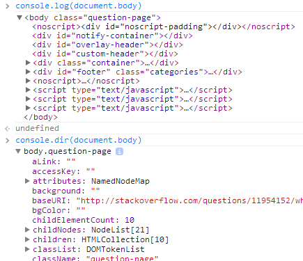

{{APIRef(“Console API”)}}
The console.log() method outputs a message to the web console. The message may be a single string (with optional substitution values), or it may be any one or more JavaScript objects.
{{AvailableInWorkers}}
obj1 … objN
console.log(), but it is the value of the object at the moment you open the console.msg
subst1 … substN
msg. This gives you additional control over the format of the output.See Outputting text to the console in the documentation of {{domxref(“console”)}} for details.
You might ask yourself what’s the difference between {{domxref(“console.dir()”)}} and console.log().
Another useful difference in Chrome exists when sending DOM elements to the console.

Notice:
console.log prints the element in an HTML-like treeconsole.dir prints the element in a JSON-like treeSpecifically, console.log gives special treatment to DOM elements, whereas console.dir does not. This is often useful when trying to see the full representation of the DOM JS object.
There’s more information in the Chrome Console API reference about this and other functions.
Don’t use console.log(obj), use console.log(JSON.parse(JSON.stringify(obj))).
This way you are sure you are seeing the value of obj at the moment you log it. Otherwise, many browsers provide a live view that constantly updates as values change. This may not be what you want.
{{Specifications}}
{{Compat}}